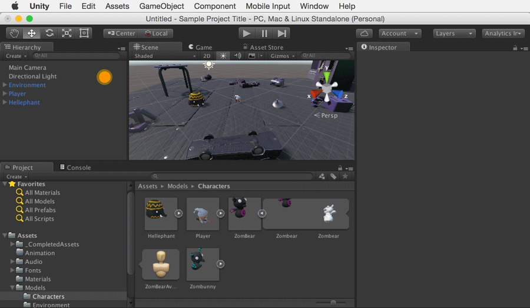
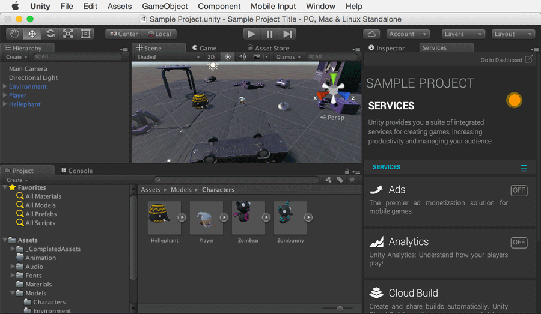

Connect your project
This is to ensure that your Unity Project is linked to your Analytics project in the cloud. You may connect to a new Analytics project or an existing one.
Open the Services Window
Window > General > Services or by clicking the Services Window icon.

Create a new project ID or link to existing Analytics project
New Analytics Project: There are two ways to create an Analytics Project ID in 5.2:
Unity Analytics Dashboard - Create a New Analytics Project by clicking "Add Project."
Unity 5.2 Editor - Open the Services Window in the Unity 5.2 Editor. Select your Organization and then "Create"
Existing Analytics project: Select "I already have a Unity Project ID." Choose your Organization, Project and click "Link".
Confirm both project IDs match
Confirm your Unity Analytics Project ID is the same as the Unity Project ID listed in Services Window Settings. This is to ensure that your Unity Project is linked correctly to your Analytics project. Your Unity Analytics Project ID can be found in 5.2 Integration instructions on the Unity Analytics Dashboard.
Unity Analytics Project ID: "SAMPLE-UNITY- PROJECT-ID will display here"

What to Do if Project IDs Don't Match
If you cannot find Unity Project ID in the Services Window, or if you observe a mis-match in Project IDs, this may be due to you upgrading a project using an older version of Unity, or by creating a new project while offline. You can remedy this by linking your Analytics project to your project in the Editor. Instructions